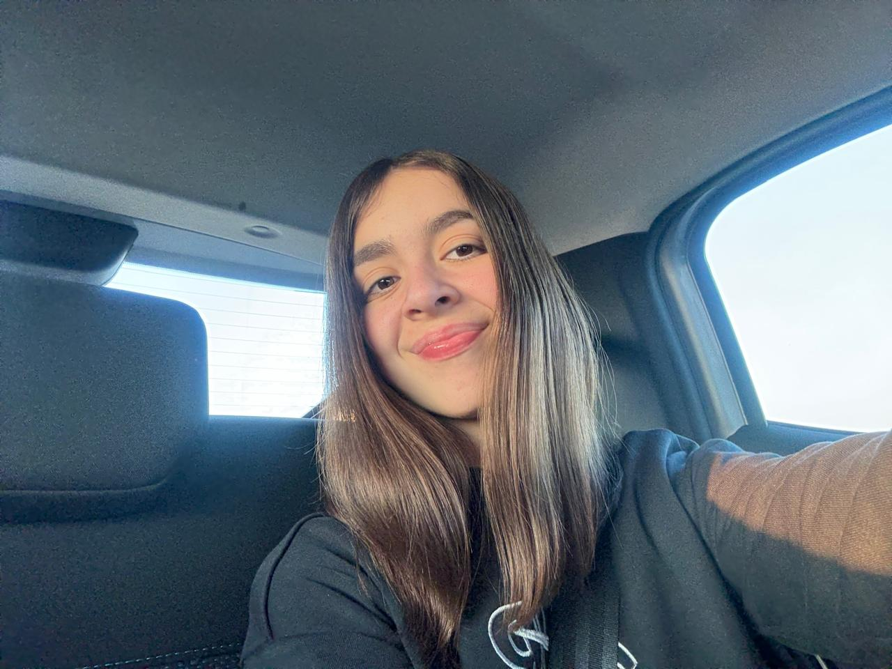

Estefi Carzoglio: Sitio Personal

Experta en desarrollo Web y aplicaciones móviles, y estudiante universitaria de la carrera de Gestión en Tecnología de la Información
Ricardo Lora: Sitio Personal
Experto en diseño de UX/UI, y estudiante universitario de la carrera de Gestión en Tecnología de la Información
Ignacio Lopez: Sitio Personal
Experto en Consultoría y Transformación Digital, y estudiante universitario de la carrera de Gestión en Tecnología de la Información
Maca Calderon: Sitio Personal
Experta en Seguridad Web y Negocios Digitales, y estudiante universitaria de la carrera de Gestión en Tecnología de la Información
Benicio Geres: Sitio Personal
Experto en Mantenimiento y Soporte técnico de sistemas, y estudiante universitario de la carrera de Gestión en Tecnología de la Información